A design hideaway by the village square, minutes from the pelicans of Lake Kerkini.
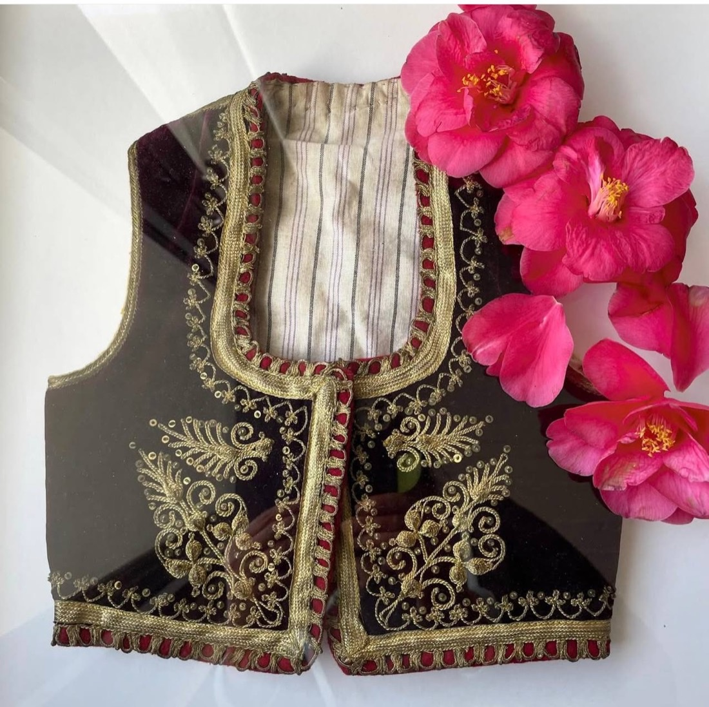
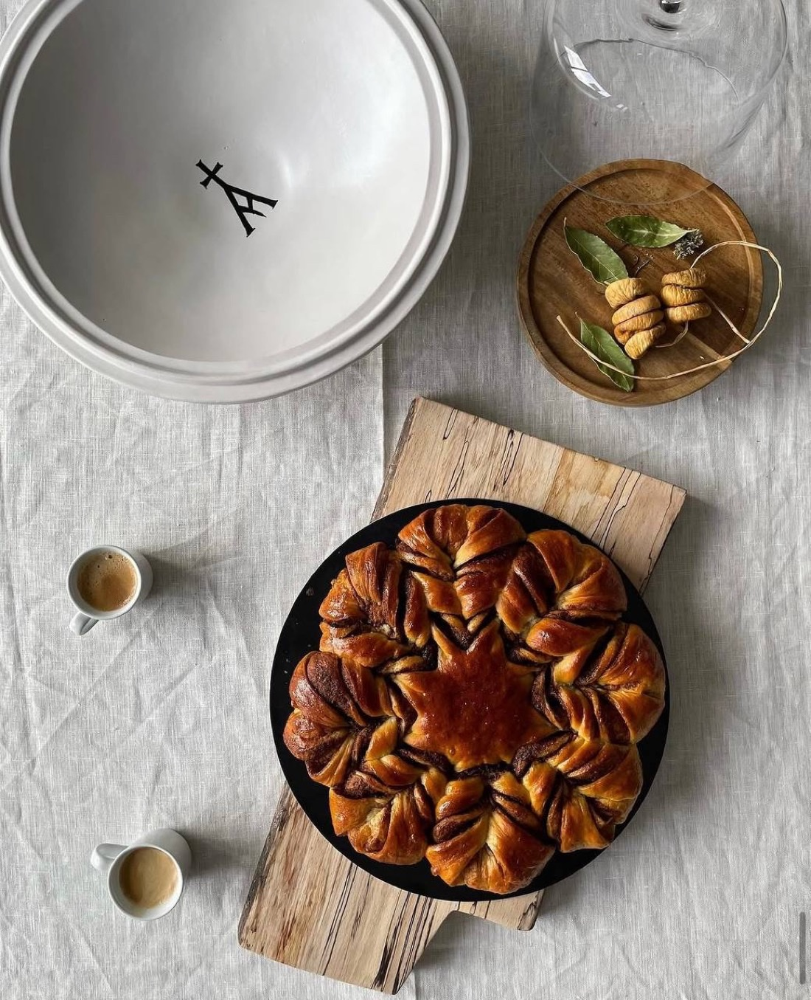
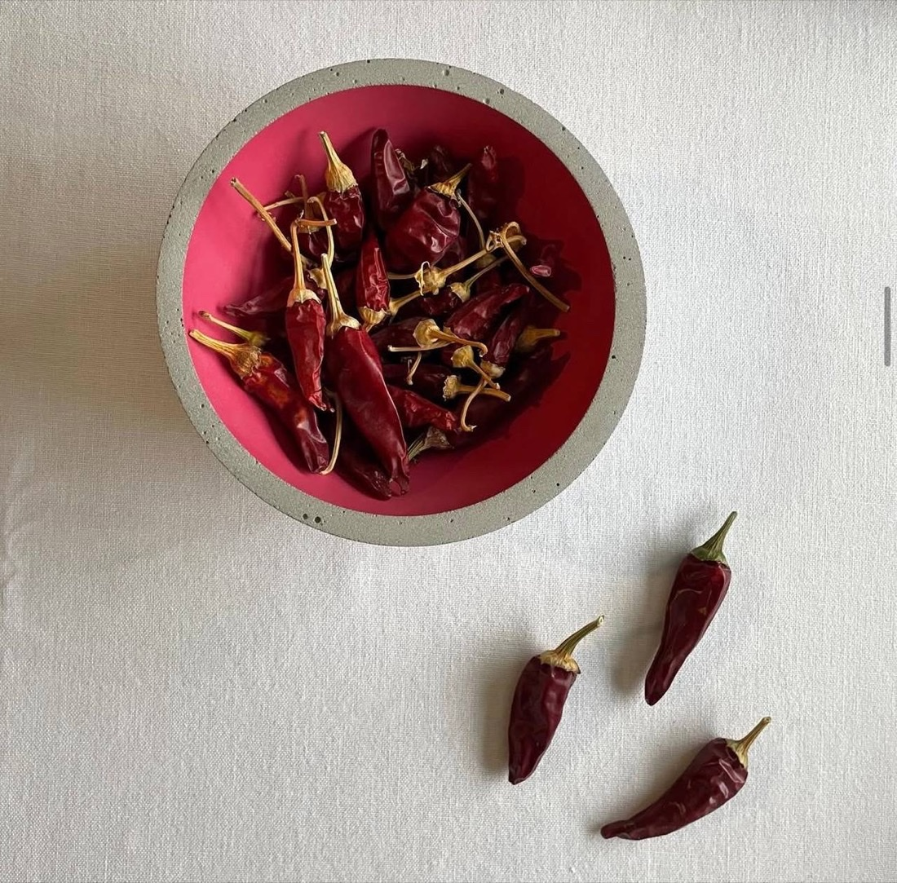
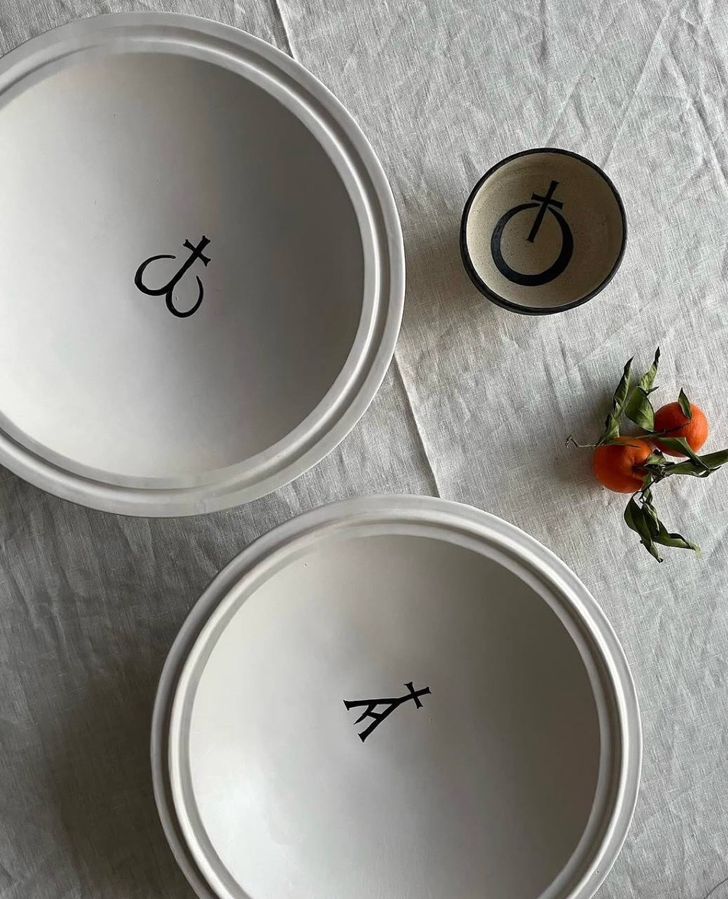
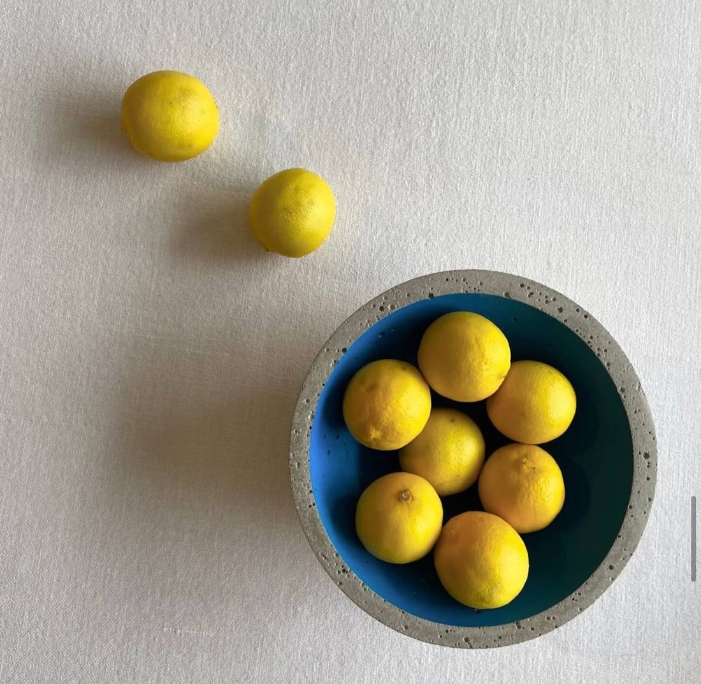
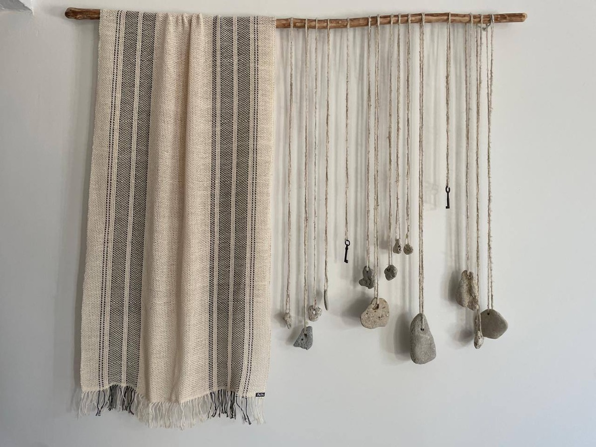
Not a hotel. One home, lent to you above the lake.
For more than thirty years this was the village carpenter's shop. Today it is one autonomous apartment of eighty square metres, a few steps from the square of Ano Poroia, with its own entrance and a private courtyard.
Inside, it is a single open volume: white walls, a reed ceiling, a daybed in the light, a proper kitchen under a run of wooden stools, and real artworks on the walls. Underfloor heating keeps the warmth even and the look clean. It sleeps two in earnest comfort and reads as a private home that someone with a careful eye happens to lend you.
Kerkini was always a day trip, somewhere you came for a morning with binoculars and left before dark, because there was nowhere worth unpacking a bag.
Casa Massina is the room that changes that: a genuinely well-made space in a place that did not have one. No spa, no concept, no wall of branding. Come for the morning on the water and stay for the quiet that follows.
Part of what makes Casa Massina feel like a home rather than a rental is that the pieces in it are real. A few of them are worth knowing before you arrive.
A sculpture in white Naxos marble, set to stand against the window so the light moves through and around it.
A canvas that anchors the main wall and sets the room's colour.
A woven piece in fine threads, hung over the sofa, catching the light differently through the day.
Handmade ceramic pieces in strong colour, placed through the open space.
Downhill from the village lies Lake Kerkini, a Ramsar wetland and Natura 2000 park where Dalmatian and white pelicans glide in by the hundred, herds of water buffalo stand in the shallows, and more than three hundred bird species pass through the year.
Go out at first light in a flat-bottomed boat, drift among the pelicans and the drowned willows, and come back for breakfast. The birds are sharpest in the cold months, from autumn through early spring. This is why people come, and why it is worth staying the night.
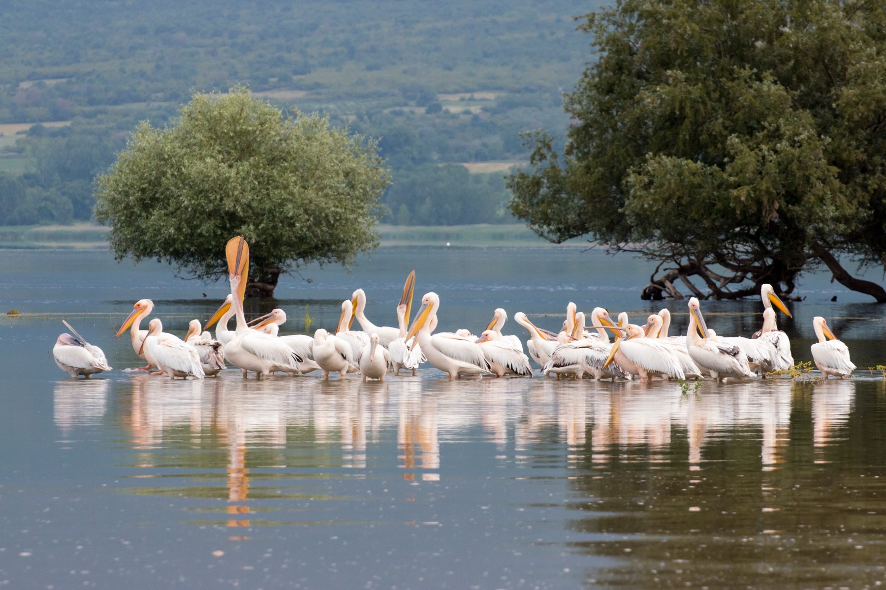
Lake Kerkini. Photo: Vassilios Vescoukis, Wikimedia Commons (CC BY-SA 4.0)Local boatmen take small groups out onto Kerkini at sunrise, in among the birds and the half-submerged trees. The classic Kerkini morning, and the one you will remember.
Pelicans, herons, cormorants, egrets and raptors, plus the water buffalo on the banks. Bring binoculars; the information centre and hides help you read the lake.
Above the village rise the plane-shaded springs and the trails of Mount Belles, on the border ridge. Cool walking and big views, a short drive up from the door.
The village tavernas cook what the place gives: Kerkini water-buffalo meat, freshwater fish, and proper Macedonian pies. A full kitchen waits back at the apartment too.
Day trips reach the thermal baths of Sidirokastro, the town of Serres, and the ancient sites of the Strymon valley. Quiet roads, few crowds.
Cold, clear winter mornings for the birds; green and unhurried in summer. There is no wrong month, only a different lake each time.
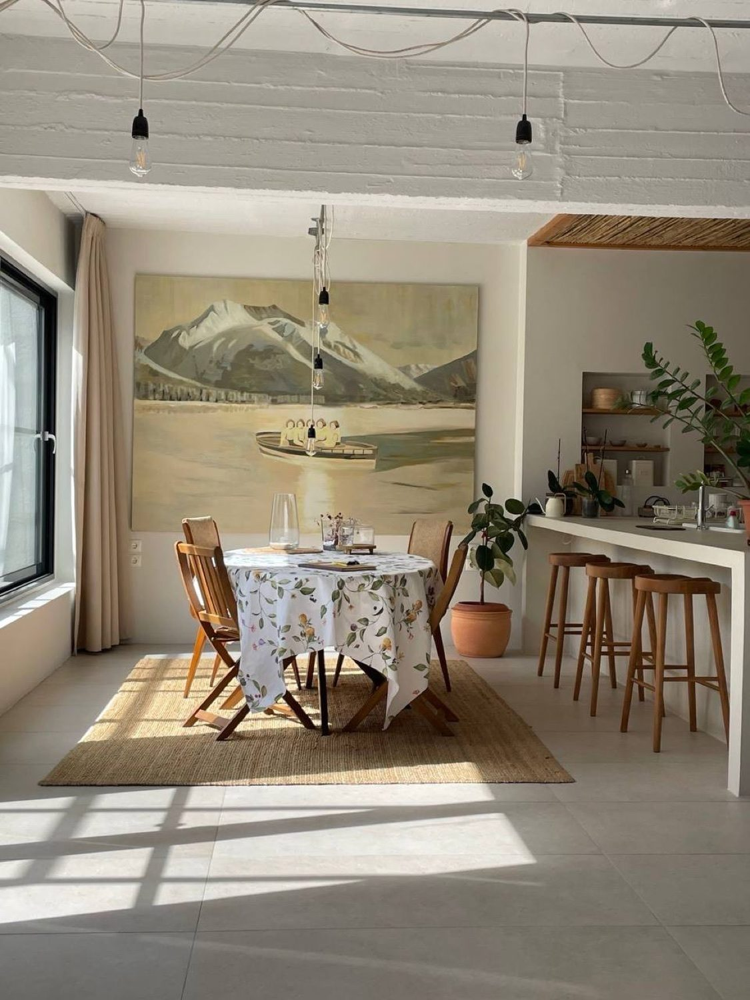
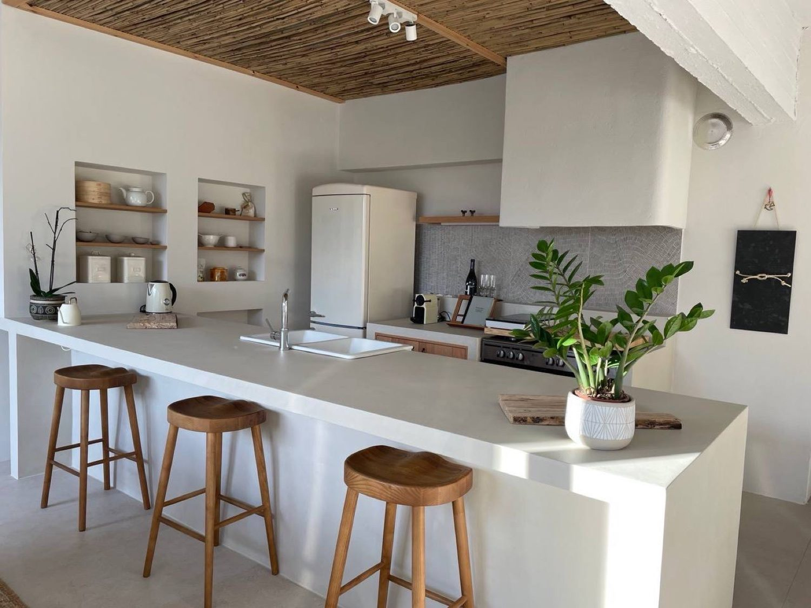
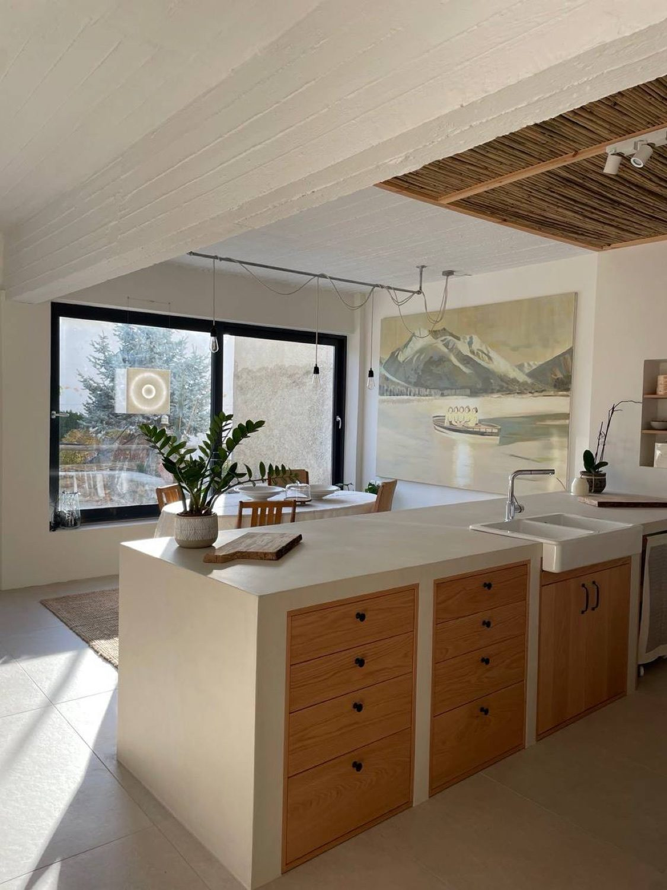
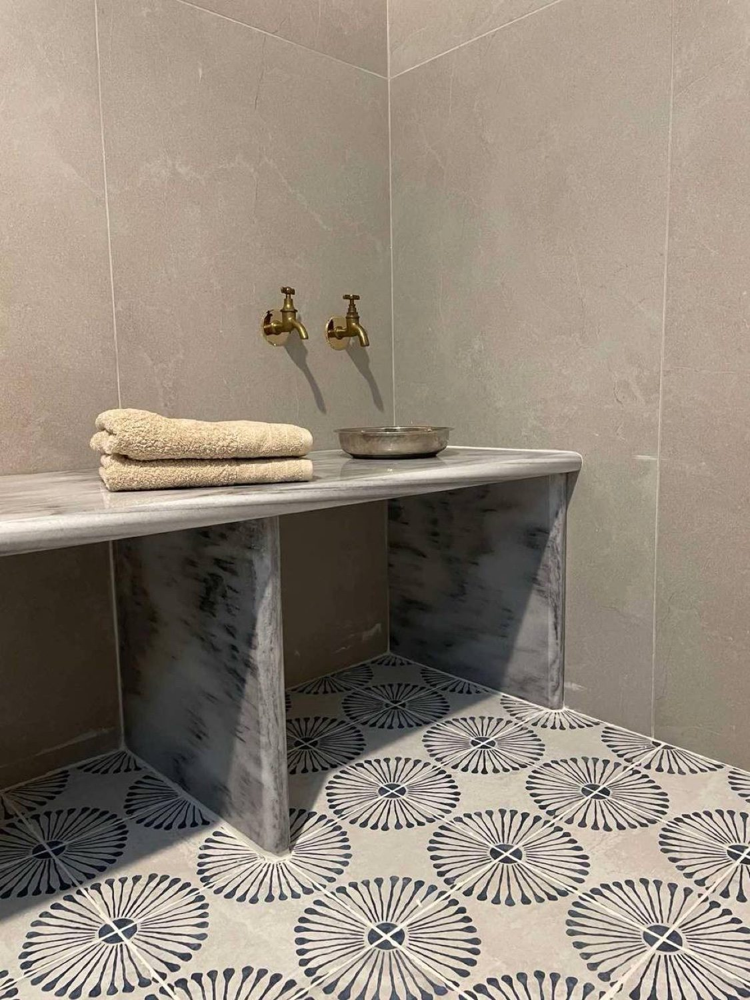
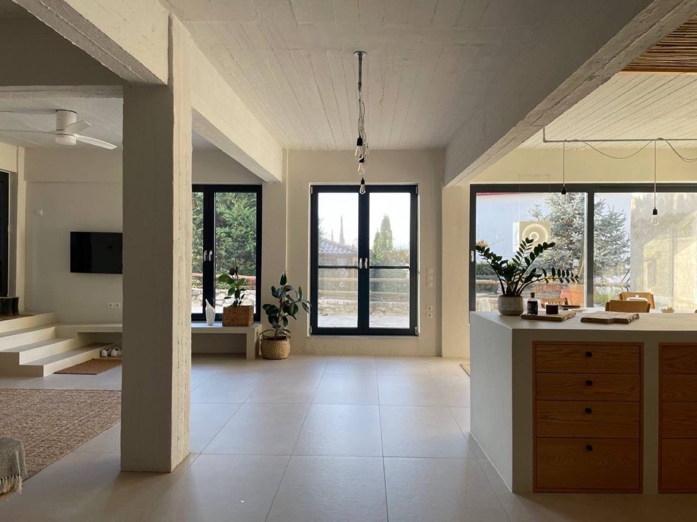
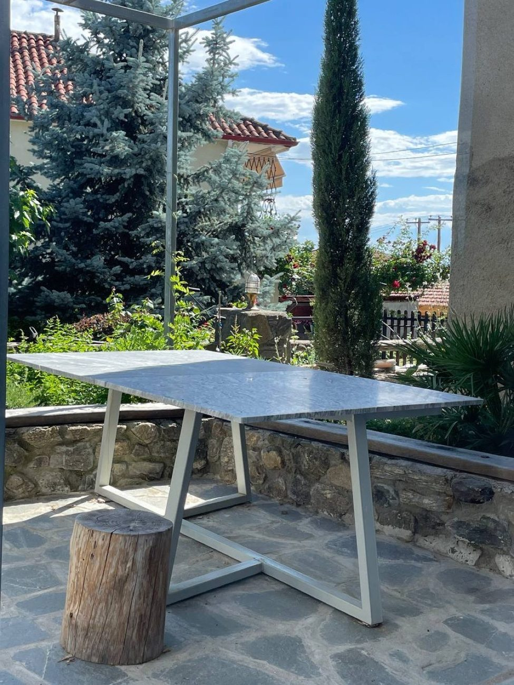
The best rate is the one you book with us directly, with no platform in between. Tell us your dates and we will hold the house for you.
+30 694 467 7617Beside the village square, in the north of Greece near the Belles ridge. About an hour from Serres and the Thessaloniki road, and ten minutes down to the lake.
The simplest way is to call us on +30 694 467 7617. We answer personally, confirm your dates on the spot, and give you our best direct rate. You can also book through Airbnb or Booking.com.
Two guests, in genuine comfort. It is a single autonomous apartment, booked by one party at a time, so you always have the whole place to yourselves.
For the birds, autumn to early spring, when the pelicans are in and the light is clear. Summer is green, quiet and unhurried. Each season gives a different lake.
Yes, free parking by the house, and the village square with its tavernas is a minute's walk away.